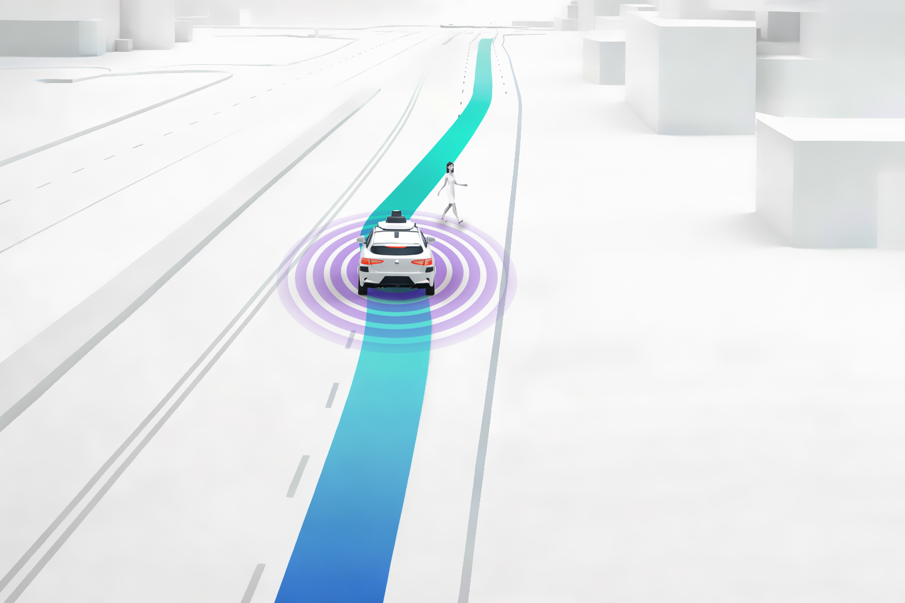

Robotics
Support robotics teams that need synthetic data, edge-case coverage, and repeatable testing before rollout.
Industries
The common thread is simple: teams need better data and better testing in environments where direct collection is incomplete, expensive, or hard to repeat.

Support robotics teams that need synthetic data, edge-case coverage, and repeatable testing before rollout.
Model facility environments, logistics operations, and inspection workflows where field capture is hard to scale.
Generate scenarios for outdoor inspection, remote monitoring, infrastructure review, and high-variability environments.
Provide scenario-driven training and testing for autonomous systems operating across changing conditions and missions.
Support sensitive programs that need controlled testing and scenario coverage without depending only on raw field collection.
Help organizations that need repeatable evidence and cleaner comparisons across system versions.